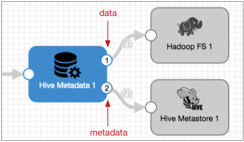

Hive Metadata
The Hive Metadata processor works with the Hive Metastore destination, and the Hadoop FS or MapR FS destinations as part of the Drift Synchronization Solution for Hive.
Use the Hive Metadata processor for records to be written to HDFS or MapR FS when you want the Hive Metastore destination to create and update tables as needed. The processor also generates record header attributes that the Hadoop FS destination and the MapR FS destination can use to process the data.
When you configure the Hive Metadata processor, you define the connection information for Hive and the expressions that define the database, table, partitions, and decimal field expressions that the records require. You also specify the data format to use: Avro or Parquet.
You define the location of the Hive and Hadoop configuration files and optionally specify additional required properties. You can also configure advanced options, such as the maximum cache size, time basis, decimal precision and scale expressions, and custom record header attributes for the metadata record.
For more information about the Drift Synchronization Solution for Hive and case studies for processing Avro and Parquet data, see Drift Synchronization Solution for Hive. For a tutorial, check out our tutorial on Github.
Output Streams
The Hive Metadata processor includes a data and a metadata output stream. The following image shows the Hive Metadata processor output streams:

- Data output stream
- Passes records downstream to the Hadoop FS destination or the MapR FS destination. You can add additional stages between the Hive Metadata processor and the destinations when needed, but only the Hadoop FS and MapR FS destinations can use the generated record header attributes to write records.
- Metadata output stream
- Passes the metadata records downstream to the Hive Metastore destination. The
metadata output stream does not pass record data of any kind.
You can add additional stages between the Hive Metadata processor and the Hive Metastore destination when needed, but only the Hive Metastore destination can use the metadata record to update the Hive Metastore.
Metadata Records and Record Header Attributes
The Hive Metadata processor produces the following specialized output:
- metadata record
- When encountering compatible metadata changes, the Hive Metadata processor
generates a metadata record. The metadata record passes the following
information to the Hive Metastore destination:
- The expected table structure for compatible changes, based on the
record.
Compatible changes include new tables and partitions, and the addition or removal of fields in the record. Changes in data type are not compatible.
- Any user-defined record header attributes configured in the stage.
- The expected table structure for compatible changes, based on the
record.
- When the Hive Metastore destination receives the metadata record, the destination performs a final check against Hive metadata and creates or alters tables as needed.
- data record header attributes
- The Hive Metadata processor adds the following attributes to the record
header for data records:
- targetDirectory - The location where each record should be
written.
The processor generates the directory based on the database, table, and partition information for each record and writes it to the targetDirectory header attribute.
When processing Parquet data, the Hive Metadata processor adds .avro to the target directory that it generates for each record. This allows the data-processing destination to write the Avro files to a directory that Hive ignores as a temporary directory.
As a result, the destination writes files to the following directories: <generated directory>/.avro.
Note: You can configure the MapReduce executor to write the Parquet files to the parent generated directory and to delete the Avro files after processing them. You can also delete the temporary directories after the files are processed, as needed.To use this header attribute, configure the Hadoop FS or MapR FS destination to write records using the directory in the record header.
- avroSchema - The Avro schema for the record.
The processor writes the Avro schema in the avroSchema header attribute for each record. When the processor notes a compatible change in the Avro schema, it generates a new Avro schema. This attribute is used for both Avro and Parquet data.
To use this header attribute, configure the Hadoop FS or MapR FS destination to write records using the Avro schema in the record header.
- roll - An indicator to roll the file associated with the record.
The processor generates a roll indicator only when the Avro schema changes in a compatible way. Records with incompatible changes are sent to the stage for error handling.
To use this header attribute, configure the Hadoop FS or MapR FS destination to roll records when encountering the roll attribute in the record header. And then, use the default "roll" as the name of the header attribute.
- targetDirectory - The location where each record should be
written.
- For more information about using destinations to process these attributes, see Record Header Attributes for Record-Based Writes. For general information about record header attributes, see Record Header Attributes.
Custom Record Header Attributes
You can configure the Hive Metadata processor to create custom record header attributes for the metadata record generated by the processor. You can use a constant to define the custom attributes or you can use an expression to define the attributes based on information in the record or pipeline.
You might use custom record-header attributes when you route the metadata record to a destination other than the Hive Metastore destination. The Hive Metastore destination uses field information in the metadata record, but most other destinations, such as the Amazon S3 or Kafka Producer destinations, can write the metadata records to different locations based on the value of an expression. And you can configure the expression to use the custom header attribute that you define.
For example, say each incoming record has a SalesRegion value that you want to use to write metadata records to different Amazon S3 partitions. You can configure the Hive Metadata processor to create an SRegion header attribute and use the ${record:value('/SalesRegion')} expression to define the attribute. When you configure the Amazon S3 destination, you can use the following expression to define the partition prefix: ${record.attribute('SRegion')}.
Database, Table, and Partition Expressions
- Database and table expressions
- The database expression represents the database where Hadoop FS or MapR FS destination should write the record. If you omit the database expression, the processor uses the default Hive database.
- The table expression represents the table to use. If the table doesn't exist, the processor generates a metadata record to create the table.
- The database and table expressions are also incorporated into the targetDirectory to allow record-based writes to the database.
- Tips for configuring the database and table expressions:
- If all records are to be written to a single database or table, you can enter the database or table name instead of an expression.
- If the database or table name can be extrapolated from record data or header attributes, you can enter an expression that evaluates to the database or table name.
- When necessary, you can use an Expression Evaluator earlier in the pipeline to perform calculations and write the results to a new field or a header attribute, to be used by the Hive Metadata processor.
- Partition configuration information
- You can optionally configure partition properties to write to partitions. When you configure partition information, you state the Hive partition column name, an expression that evaluates to the partition name, and the data format of the partition data. You can use the Int, Bigint, and String data formats for partition data.
- Like with database and table expressions, you can configure the partition
expression as needed:
- If all records are to be written to a single partition, you can enter the partition name for the expression.
- If the partition depends on information in the record, you can enter an expression that evaluates to the partition.
- When necessary, you might use an Expression Evaluator earlier in the pipeline to generate the partition name and write it to the record as a new field or the record header as a header attribute.
- You can use datetime variables such as ${YYYY()} or ${DD()} to create datetime-based partitions. When creating datetime-based partitions, consider the time basis that you want to use. By default, the processor uses the time of processing as the time basis, but you can use the time associated with a record as well.
- For details about datetime variables, see Datetime Variables.
Hive Names and Supported Characters
Hive table names, column names, and partition names are created with lowercase letters.
| Name | Supported Characters |
|---|---|
| Table names | Alphanumeric characters and underscore ( _ ). |
| Column names | Alphanumeric characters and underscore, but must begin with a letter or underscore. |
| Partition names | Alphanumeric characters and underscore, but must begin with a letter. |
Decimal Field Expressions
Decimal field expressions define the precision and scale to use for decimal fields. When you configure the Hive Metadata processor, you specify an expression for the precision and for the scale.
You can enter expressions that evaluate to the same precision and scale for all decimal fields in the record. For example, if your use case allows it, you could use a precision of 10 and scale of 2 for all decimal fields.
Or you can create a more complex expression that evaluates to different values for different decimal fields.
${record:attribute(str:concat(str:concat('jdbc.', field:field()), '.precision'))}
${record:attribute(str:concat(str:concat('jdbc.', field:field()), '.scale'))}
${record:attribute(jdbc.<fieldname>.precision)}
${record:attribute(jdbc.<fieldname>.scale)}
For information about enabling the JDBC Query Consumer to create JDBC header attributes, see Header Attributes with the Drift Synchronization Solution.
Time Basis
- processing time
- When you use processing time as the time basis, the processor uses the processing time and the partition value expression to determine the partition value to use in the metadata record and the partition portion of the targetDirectory header attribute.
- For example, say a partition value expression creates a new partition every day and the time basis is the time of processing. Then, the processor generates a daily metadata record that the Hive Metastore destination uses to create the daily partition. And the processor adds the daily partition value to the targetDirectory path.
- To use the processing time as the time basis, use the following expression: ${time:now()}. This is the default time basis.
- record-based time
- When you use the time associated with a record as the time basis, you specify a Date field in the record as part of the partition value expression. The processor uses the datetimes associated with the records and the partition value expression to determine the partition value to use in the metadata record and the partition portion of the targetDirectory header attribute.
- For example, say a partition value expression creates directories every hour and the time basis is based on the record. Then, for every hour associated with a record, the processor generates a metadata record so the Hive Metastore destination can create hourly partitions as needed. And the processor adds the hourly partition value to the targetDirectory path.
- To use a time associated with the record, use an expression that calls a field and resolves to a datetime value, such as ${record:value("/Timestamp")}.
Cache
The Hive Metadata processor queries Hive for information and caches the results. When possible, it uses the cache for record comparison to avoid unnecessary Hive queries.
- Database and table to be written to
- Hive table properties
- Column names and data types in the table
- Avro schema
- Partition values
Cache Size and Evictions
You can configure the maximum size of the cache. When the cache reaches the specified limit, it uses the LRU eviction policy, which removes the least recently used data to allow for new entries to be written to the cache.
Kerberos Authentication
You can use Kerberos authentication to connect to HDFS or MapR FS. When you use Kerberos authentication, Data Collector uses the Kerberos principal and keytab to connect to HiveServer2.
The Kerberos principal and keytab are defined in the Data Collector configuration file, $SDC_CONF/sdc.properties. To use Kerberos authentication, configure all Kerberos properties in theData Collector configuration file, and include the Kerberos principal in the HiveServer2 JDBC URL.
Hive Properties and Configuration Files
You must configure Hive Metadata to use Hive and Hadoop configuration files and individual properties.
- Configuration Files
-
The following configuration files are required for the Hive Metadata processor:
- core-site.xml
- hdfs-site.xml
- hive-site.xml
- Individual properties
- You can configure individual Hive properties in the processor. To add a Hive
property, specify the exact property name and the value. The processor does not
validate the property names or values.Note: Individual properties override properties defined in the configuration files.
Configuring a Hive Metadata Processor
-
In the Properties panel, on the General tab, configure the
following properties:
General Property Description Name Stage name. Description Optional description. Required Fields 
Fields that must include data for the record to be passed into the stage. Tip: You might include fields that the stage uses.Records that do not include all required fields are processed based on the error handling configured for the pipeline.
Preconditions Conditions that must evaluate to TRUE to allow a record to enter the stage for processing. Click Add to create additional preconditions. Records that do not meet all preconditions are processed based on the error handling configured for the stage.
On Record Error Error record handling for the stage: - Discard - Discards the record.
- Send to Error - Sends the record to the pipeline for error handling.
- Stop Pipeline - Stops the pipeline. Not valid for cluster pipelines.
-
On the Hive tab, configure the following properties:
Hive Property Description JDBC URL JDBC URL for Hive. You can use the default, or replace the expression for the database name with a specific database name when appropriate. For more information about specifying the URL, see our Ask StreamSets post.
JDBC Driver Name The fully-qualified JDBC driver name. Database Expression 
Optional name of the database to use. You can use an expression that evaluates to a database name. When not defined, the processor uses the Hive default database.
Table Name Name of the table to use. You can use an expression that evaluates to a table name. Note that Hive table names are all lowercase.
Partition Column Name Name of the partition column in the Hive table. Note that Hive partition column names are all lowercase.
Partition Value Type The data type of partition values. You can use the Int, Bigint, and String data formats for partition data. Partition values should not include the following characters: comma, slash (/), backslash (\), single and double quotation marks, equals (=), and brackets ( [] ).
Partition Value Expression Expression that evaluates to the partition value to use. External Table Indicates if the table is an external table. Select to write to tables outside the Hive default location. When not selected, the processor uses the default location defined by the hive.metastore.warehouse.dir property in the hive-site.xml configuration file, typically /user/hive/warehouse/.
Column Comment Expression that evaluates to column comments. Table Path Template Expression that defines the path to use for external tables. Partition Path Template Expression that defines the partition path to use for external tables when partitions are configured. When you omit partition configuration details, you can skip this property as well. When configured, the value of the partition path template is appended to the value of the table path template to determine where each record is written.
Use the following format:<partition column name>=<partition value expression>
Decimal Precision Expression Expression that defines the precision of decimal fields. Enter a single value to be used by all decimal fields in the record or an expression that evaluates to different precisions for different fields. Note: At this time, the maximum precision and scale for decimal data in Hive is 38.The default expression determines the precision based on information in the JDBC header attribute.
Use the default only when processing data from a JDBC Query Consumer or a JDBC Multitable Consumer with JDBC header attributes enabled. Replace "jdbc" with the configured JDBC header prefix when necessary.
Decimal Scale Expression Expression that defines the scale for decimal fields. Enter a single value to be used by all decimal fields in the record or an expression that evaluates to different scales for different fields. Note: At this time, the maximum precision and scale for decimal data in Hive is 38.The default expression determines the scale based on information in the JDBC header attribute.
Use the default only when processing data from a JDBC Query Consumer or a JDBC Multitable Consumer with JDBC header attributes enabled. Replace "jdbc" with the configured JDBC header prefix when necessary.
Hadoop Configuration Directory Absolute path to the directory containing the Hive and Hadoop configuration files. For a Cloudera Manager installation, enter hive-conf.
The stage uses the following configuration files:- core-site.xml
- hdfs-site.xml
- hive-site.xml
Note: Properties in the configuration files are overridden by individual properties defined in this stage.Additional Hadoop Configuration
Additional properties to use.
Using simple or bulk edit mode, click Add to add additional properties and define the property name and value. Use the property names and values as expected by Hive and HDFS or MapR FS.
-
On the Advanced tab, optionally configure the following
properties:
Advanced Property Description Max Cache Size (entries) Maximum number of entries in the cache. When the cache reaches the maximum size, the oldest cached entries are evicted to allow for new data.
Default is -1, an unlimited cache size.
Time Basis Time basis used to evaluate datetime-based partition value expressions. Data Time Zone Time zone to use with Time Basis to evaluate datetime-based partition value expressions. Header Attribute Expressions Use to define custom record header attributes for the metadata record. Using simple or bulk edit mode, click the Add icon to configure custom record header attributes.